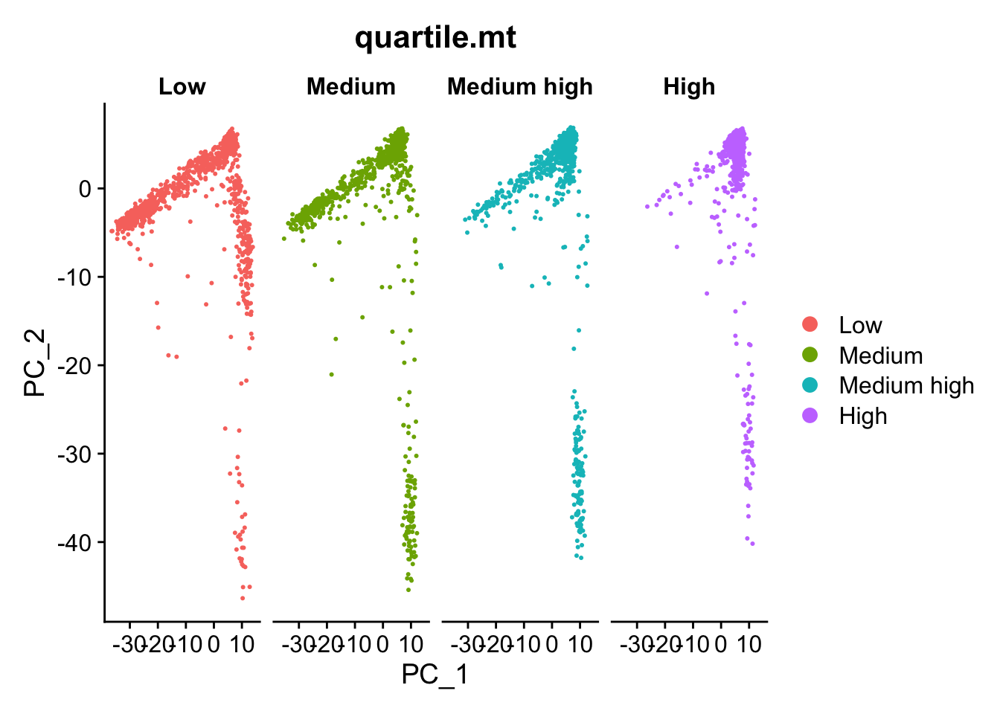

Chapter 3 Normalization and PCA
Load RData
Load the RData which contains all files from previous chapter.
load("data/intermediate_data/chapter2.RData")1. Normalization
We will perform normalization on UMI counts using LogNormalize.
LogNormalize divides the UMI counts of a gene in a cell into the total UMI counts in that cell. After division, we take the natural log.
filtered.rna <- NormalizeData(filtered.rna,
normalization.method = "LogNormalize")Where are the normalized counts stored?
The normalized counts are stored in the slot RNA.
filtered.rna@assays[["RNA"]]@data[1:5, 1:5]5 x 5 sparse Matrix of class "dgCMatrix"
74 391 440 1222 2690
A1BG-AS1 . . . . .
A1CF . . . . .
A2M . . . . .
A2M-AS1 . . . . .
A2ML1-AS1 . . . . .2. Evaluating effects of mitochondrial percentage (optional)
The unwanted variation, such as the difference in mitochondrial percentage, could bias the downstream analysis.
For example, we don’t want the cells clustered based on the difference in mitochondrial percentage.
Let’s first has a look if the mitochondrial percentage introduces unwanted variation in the dataset or not. We take the normalized counts and follow the below steps to check.
- The mitochondrial percentage is a series of numbers. We can turn the mitochondrial percentage variable into a categorical variable based on quartiles.
summary(filtered.rna$percent.mt) Min. 1st Qu. Median Mean 3rd Qu. Max.
0.2155 10.1004 12.4155 12.6649 15.1489 24.9487 The cells can be grouped into 4 categories.
MT% < 1st quartile: Low.
MT% between 1st quartile and Median: Median.
MT% between Median and 3rd quartile: Median high.
MT% > 3rd quartile (15.4158%): High.
Next, we create a new variable based on the thretholds.
We use PCA to check whether the mitochondrial percentage is a source of variation. We plot the first two principal components and visualize the data.
# Identify the most variable genes
filtered.rna <- FindVariableFeatures(filtered.rna,
selection.method = "vst",
nfeatures = 2000,
verbose = FALSE)
# Scale the data
filtered.rna <- ScaleData(filtered.rna,
features = rownames(filtered.rna))
# perform PCA
filtered.rna <- RunPCA(filtered.rna)
# Plot pc1 and pc2
DimPlot(filtered.rna,
reduction = "pca",
group.by= "quartile.mt",
split.by = "quartile.mt")
Based on the above plot, we can see a different scatter pattern in cells with “Low” mitochondrial percentage.
We observe that the lobe of cells on the right middle side of the plot is only in the category “Low”. For all other levels of mitochondrial percentage, we see a more even distribution of cells across the PCA plot.
Oftentimes, it is helpful to regress out variation due to mitochondrial percentage. However, if the differences in mitochondrial percentation has the biological meaning that might help to distinguish cell clusters, then we do not regress it out.
Cell cycle is another common source of bias. For instructions on how to remove cell cycle bias, please refer to https://satijalab.org/seurat/articles/cell_cycle_vignette.html
To regress out the effect of mitochondrial percentage, add the argument vars.to.regress = "percent.mt" to the ScaleData.
3. Save
Save the files into RData for documentation.
# save(filtered.rna, expMat, file = "data/intermediate_data/chapter3.RData")